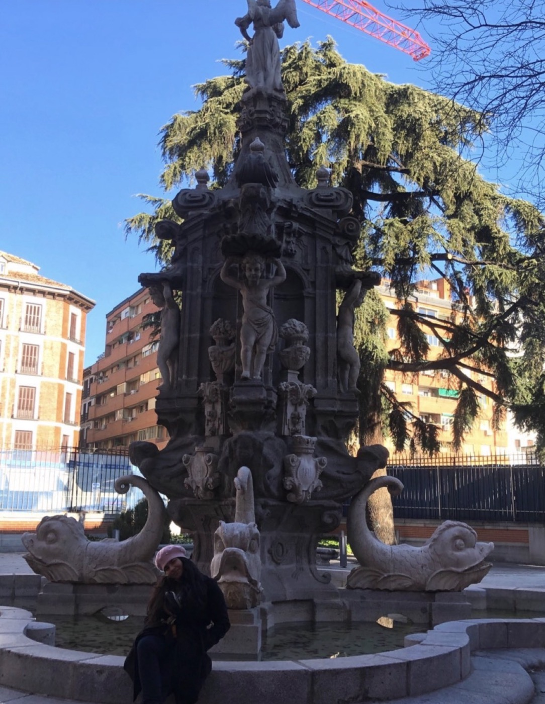
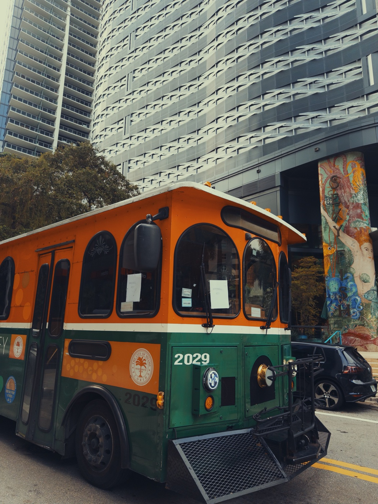
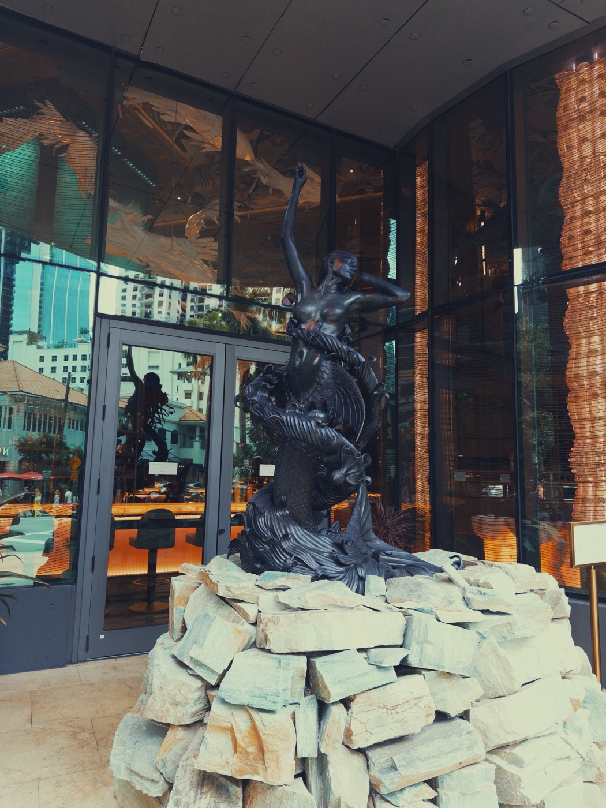
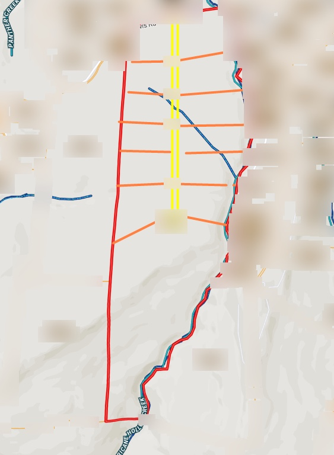
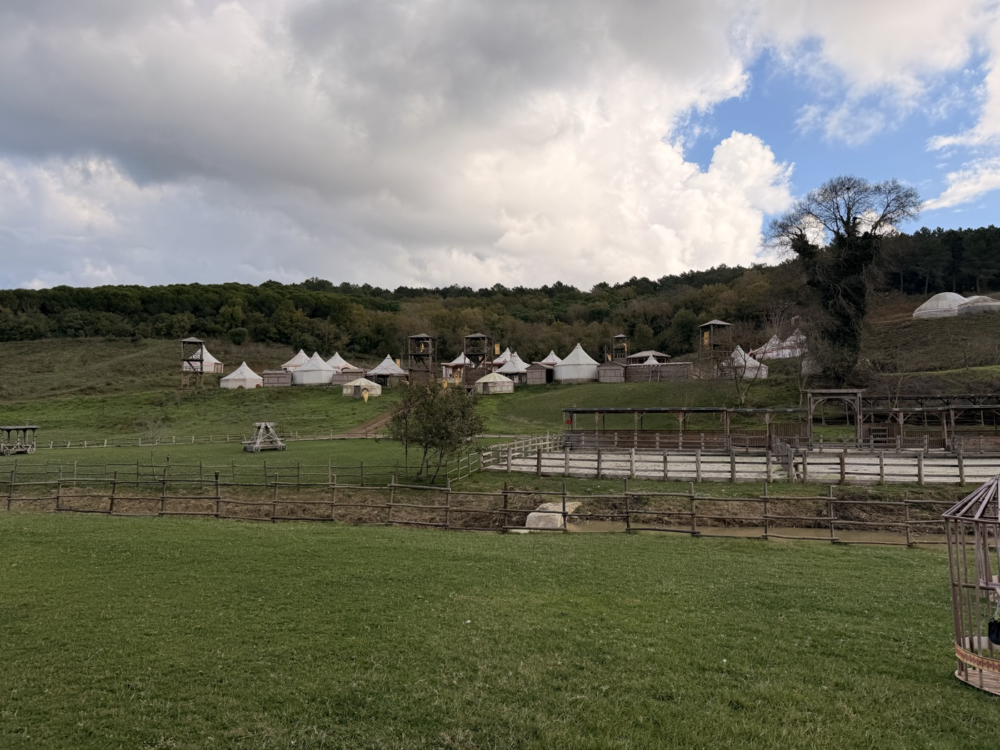
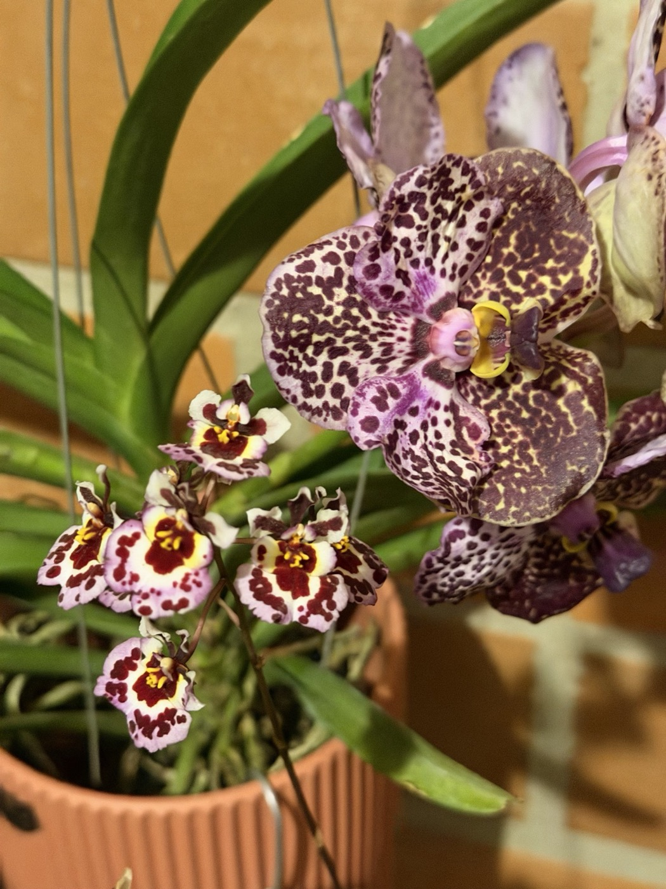

I kept becoming responsible for the thing behind the thing.
I studied civil engineering at Universidad Cooperativa de Colombia.
An international engineering scholarship took me to Bilbao for a year, to the University of the Basque Country. That is where I began my thesis: an aerodrome for domestic flights.
- 01ColombiaCivil engineering · Universidad Cooperativa de Colombia
- 02España · BilbaoInternational engineering scholarship · 1 year · University of the Basque Country
- 03USA · UtahA summer abroad
- 04USA · MiamiProperty manager’s assistant · project management · then managing the company
- 05USA · TexasScout Land Group · project manager and underwriter · now Director of Developments and Underwriting
I believe life is a little magic, if you pay attention.
I practise being thankful the way I practise anything else: every day, on purpose.
A first coffee. Light on an orchid. A road out of the city. None of it had to happen.
I try to notice it while it is still happening.

At the time, I thought I was learning how things stood up.
Loads.Materials.Plans.Soil.Structure.
I did not know yet how often I would use that training on things with no concrete in them.
A team.A process.A business.A decision.
Other rooms
Before development, there were other rooms.
An international engineering scholarship.A year at the University of the Basque Country, in Bilbao.The first lines of my thesis.
Engineering was the reason I arrived.
Language changed what I noticed once I was there.
A classroom where I also taught English.Customer support.A grocery store in Utah during a summer abroad.
Different accents.Different systems.Different ways people asked for the same thing.
Those years made me more international before I had language for it.
I learned to adapt quickly. To listen carefully. To work across cultures. To notice that the same problem can look completely different depending on who is standing in front of it.

Miami
I entered property management from the ground level.
I started as the property manager’s assistant.
Close to the everyday machinery.
Tenants.Maintenance.Vendors.Follow-ups.
The small things that decide whether an operation actually works.
Then the scope widened.
I moved into project management.
Construction.Capital improvements.Contractors.MEP coordination.Plumbing.HVAC.
Active sites where a drawing eventually had to become pipe, ductwork, equipment, drywall, and somebody’s apartment again.
I began looking at buildings differently.
Not only as properties to operate.As assets.
Investors sat on one side of the table.Buildings sat on the other.
Between them were rents, vacancies, maintenance, construction, budgets, and hundreds of decisions that eventually appeared as return.
Multifamily taught me to look at a building twice.
Once as a place.Then as an investment.
A unit could be redesigned.A repair could become preventive work.An expense could expose a larger operating problem.A property that looked stable on paper could still be leaving value on the table.
I started looking for those gaps.
What actually improves the asset.What is cosmetic.What creates a better resident experience.What strengthens the investment at the same time.
ROI became less abstract when I could walk through the thing producing it.
Construction sharpened that thinking.
A line on a plan can look perfect until it meets an existing wall.A schedule can look reasonable until one trade is waiting on another.A budget can look complete until the ceiling opens.
I learned to move between those layers.
Tenant.Contractor.Building.Investor.Return.
None of them existed separately.
By the end of my time there, I was managing the company.
That changed the scale of the problem again.
It was no longer only about moving projects forward.It was about building the operation around them.
People.Departments.Accountability.Information.Investor relationships.Investment opportunities.The systems that allowed everything else to move.
Somewhere in that period, project management stopped meaning “keep the project on schedule.”
It became the work of seeing enough of the whole system to change the outcome before the problem became expensive.


Then land arrived
At Scout Land Group, the scale changed.
A road at one edge.A title exception.A county ordinance.A broker’s opinion.A subdivision that did not exist yet.
I began in project management and underwriting and gradually moved further upstream.
Markets.Feasibility.Transactions.Broker opinions of value.Development.The teams and systems behind those decisions.
Today I lead development and underwriting.


What has to be true
I still like the moment before the answer becomes obvious.
I want to know what has to be true.What is missing.What changes if one assumption moves.What should be automated.What should stay human.
That last distinction matters to me.
I love automation because it can return attention to the places where judgment, creativity, negotiation, and relationships still matter.
A good system is a multiplier.So is the right person.So is clear ownership.So is a team that knows how to move without waiting for permission at every step.
A large part of my work has become building those multipliers.
Sometimes the model.Sometimes the workflow.Sometimes the team.Sometimes the department around it.
The goal is not more activity. It is better leverage.

Buildings
That same way of thinking follows me outside of work.
I can spend hours looking at a building.
Not only the facade.The section behind it.The staircase.The material joint.
The place where somebody had to turn a drawing into concrete, steel, wood and glass.
Construction fascinates me because eventually an idea has to answer to reality.
Architecture asks what it feels like once it stands.
Light.Proportion.Texture.The distance between things.
Why one room makes you slow down.Why another does not.
I notice those things.

Art
I notice them in art too.
A brushstroke.An old map.A botanical plate.A gemstone.A piece of jewelry where proportion matters more than size.
Objects become more interesting to me when I understand how they were made.

Languages and places
Languages do something similar.
I learn them because culture changes when it stops arriving entirely through translation.
A joke lands differently.A song opens.A street sign becomes a sentence instead of a shape.
You begin to understand what people soften, what they exaggerate, what they find beautiful, what they leave unsaid.
That is one of the reasons I love moving through different countries and cultures.
I am interested in how people build.How they speak.How they use space.What they preserve.What they replace.What they consider ordinary.
I like old streets, museums, markets, gardens, construction sites, unfamiliar neighborhoods, and the moment when a place starts making sense on its own terms.

Drawing
Drawing brings me back to the same habit.
Look first.Assume less.
A stem does not bend where memory expects it to.A leaf is rarely symmetrical.A shadow changes the structure.
Critical thinking works much the same way.So does creativity.
I do not see them as opposites anymore.
The analytical side wants the idea to survive scrutiny.
The creative side looks for the route nobody tried yet.
I need both.

How it connects
There are parts of my career that would have looked impossible to connect while I was living them.
An engineering classroom in Colombia.An engineering scholarship in Spain.A grocery aisle in Utah.A property operation in Miami.A subdivision plat somewhere in the United States.A workflow quietly running without the person who used to repeat it.
They connect now.
Not because they were planned that way.Because each one taught me how to look at the next thing differently.
I still keep learning things that do not seem to belong together.
Art.Languages.Construction.Technology.Money.Plants.Music.Architecture.Development.
Sometimes they stay separate.Sometimes two of them meet and something new appears.
There is usually another line to follow.

I like a first coffee more than a first email.
NextThe Work